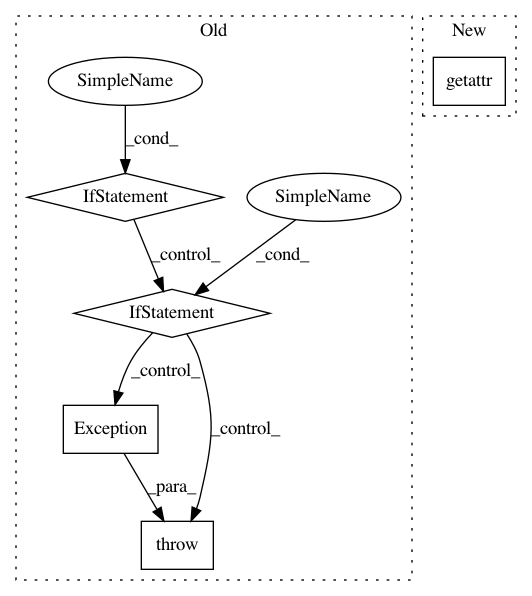

681527fa9da3ae8e29668fe30b4889f2d6134e07,imagekit/models/fields/utils.py,ImageSpecFileDescriptor,__get__,#ImageSpecFileDescriptor#Any#Any#,10
Before Change
image_fields = [getattr(instance, f.attname) for f in
instance.__class__._meta.fields if
isinstance(f, ImageField)]
if len(image_fields) == 0:
raise Exception("%s does not define any ImageFields, so your"
" %s ImageSpecField has no image to act on." %
(instance.__class__.__name__, self.attname))
elif len(image_fields) > 1:
raise Exception("%s defines multiple ImageFields, but you"
" have not specified a source for your %s"
" ImageSpecField." % (instance.__class__.__name__,
self.attname))
else:
source = image_fields[0]
spec = self.field.get_spec(source=source)
file = ImageCacheFile(spec)
instance.__dict__[self.attname] = file
return file
After Change
if instance is None:
return self.field
else:
source = getattr(instance, self.source_field_name)
spec = self.field.get_spec(source=source)
file = ImageCacheFile(spec)
instance.__dict__[self.attname] = file
return file
In pattern: SUPERPATTERN
Frequency: 3
Non-data size: 5
Instances
Project Name: matthewwithanm/django-imagekit
Commit Name: 681527fa9da3ae8e29668fe30b4889f2d6134e07
Time: 2013-04-02
Author: m@tthewwithanm.com
File Name: imagekit/models/fields/utils.py
Class Name: ImageSpecFileDescriptor
Method Name: __get__
Project Name: SpiNNakerManchester/sPyNNaker
Commit Name: 6a968dc9a3faad2037bfd1a8f12b038a368eee4d
Time: 2018-02-20
Author: christian.brenninkmeijer@manchester.ac.uk
File Name: spynnaker/pyNN/models/neuron/abstract_population_vertex.py
Class Name: AbstractPopulationVertex
Method Name: initial_values
Project Name: apple/coremltools
Commit Name: d1e6e624ef891543c5bba32bb0a696d350714693
Time: 2019-08-20
Author: smq@apple.com
File Name: coremltools/models/utils.py
Class Name:
Method Name: _convert_nn_spec_to_half_precision